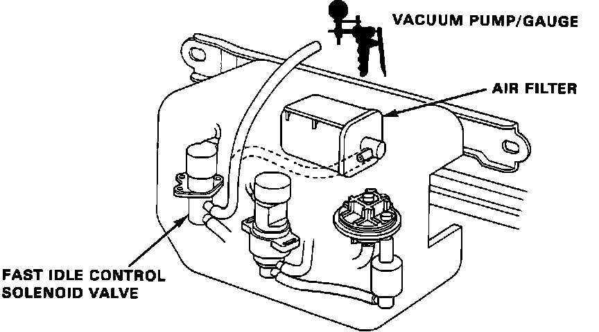
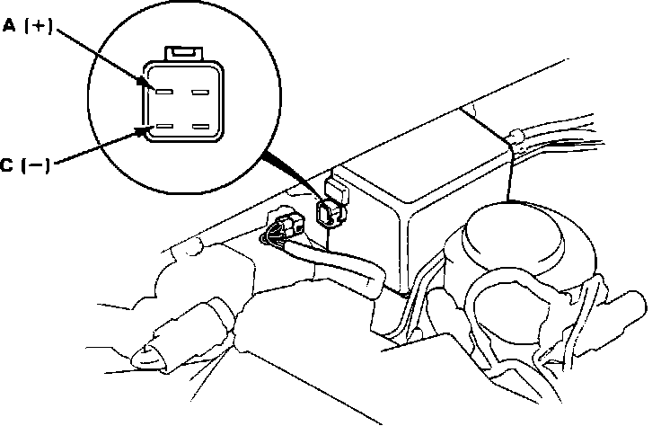

Fast Idle Control Solenoid (A/T Only)
Fast Idle Control System Testing:

1. Start engine and run until cooling fan comes on.
2. Remove vacuum control box cover.
3. Disconnect vacuum hose from filter and connect to vacuum pump/gauge.
Vacuum, proceed to next step.
No vacuum, proceed to step 7.
4. Disconnect 4 wire connector from control box.
5. Recheck vacuum gauge reading.
Vacuum, replace fast idle control solenoid. End of test.
No vacuum, proceed to next step.
6. Check for short to ground on BLU wire between ECU terminal B2 and vacuum control box. if wire checks OK, replace electronic control unit. End of test.
Fast Idle Control Solenoid Connector Identification:

7. With ignition off, disconnect 4 wire connector from the vacuum control box.
8. Using test wires, connect battery voltage to terminal A and ground to terminal C.
9. Start engine and check vacuum gauge.
Vacuum, proceed to next step.
No vacuum, replace fast idle control solenoid. End of test.
10. Fast idle control solenoid functioning properly, no further testing required.